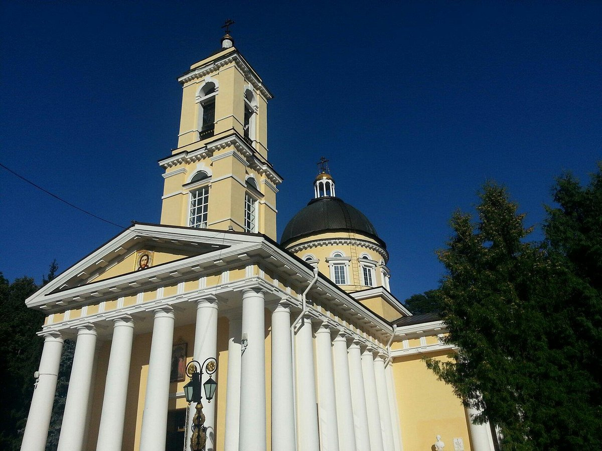
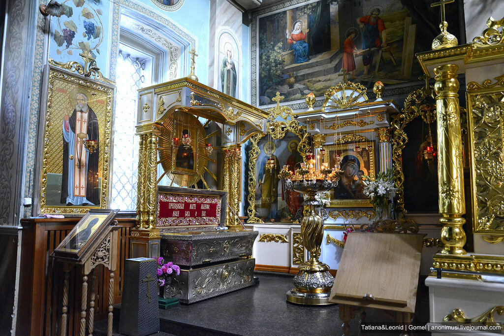

.
Петропавловский собор


Петропавловский собор — православный храм в Гомеле, кафедральный собор
Гомельской епархии Белорусской православной церкви. Входит в Гомельский
дворцово-парковый ансамбль. Собор заложен протоиереем Иоанном Григоровичем
18 октября 1809 года во владении Николая Румянцева, строился в 1809—1819
годах в стиле классицизма (архитектор — Джон Кларк). Размещается на
высоком мысу над Сожем и виден издалёка. Окончательно строительство
завершилось в 1824 году. В 1902—1930 годах настоятелем собора был
Александр Зыков. После революции 1917 года началось закрытие и разрушение
церквей, переоборудование их в учреждения иной категории. В 1935 году
Петропавловский собор был закрыт[1]. Богослужения в соборе возобновились в
1940-х годах, в период немецкой оккупации. В 1960-х годах собор закрыли и
осквернили вторично: позже в нём был оборудован планетарий[2]. В конце
1980-х годов собор был восстановлен, после чего в нём стали регулярно
проводиться богослужения[3]. 11 июля 2008 года в Петропавловском соборе
состоялся торжественный чин вручения иконы преподобного Серафима
Саровского с частицей мощей[4]. В 1944 году настоятелем собора был
пресвитер Виталий Боровой.